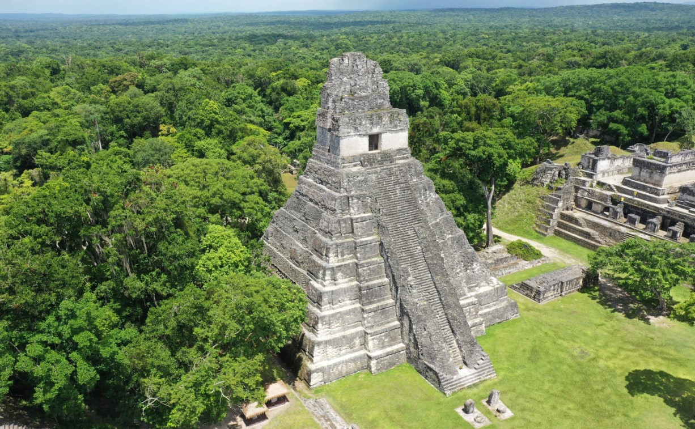
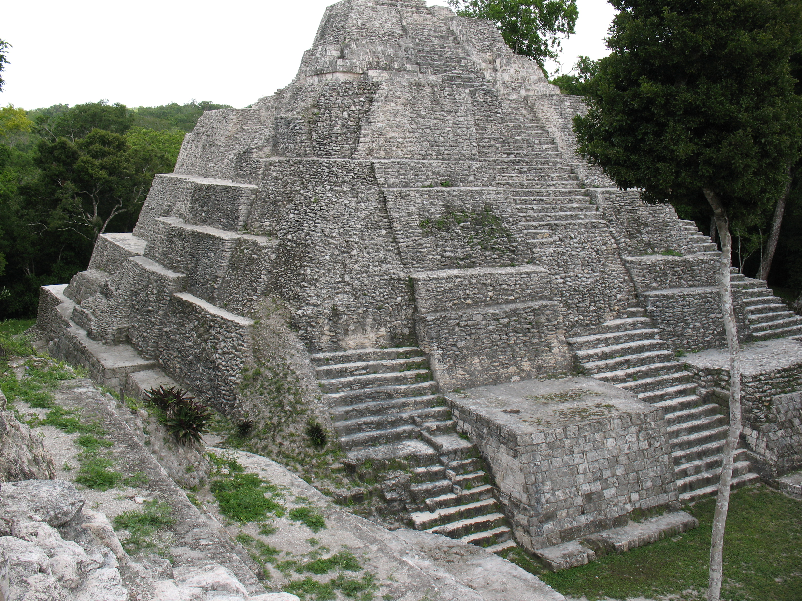
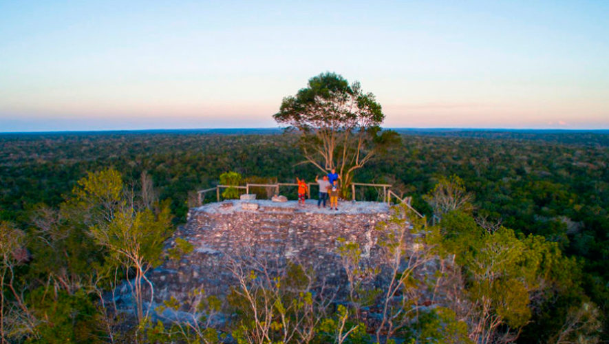
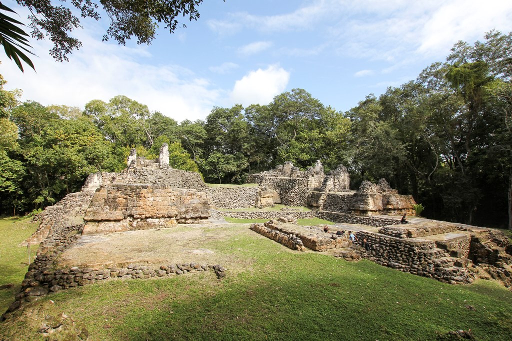
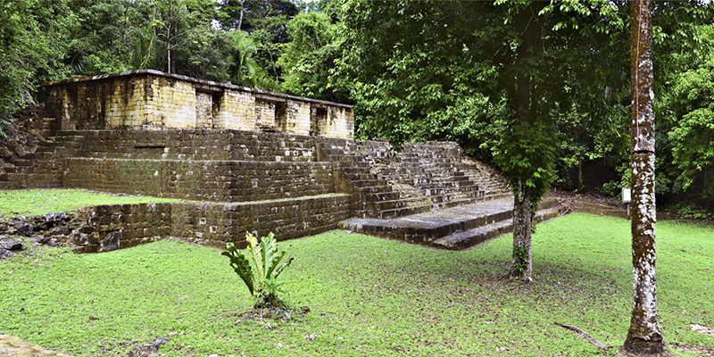

Petén, el departamento más grande de Guatemala, es el corazón del mundo maya, destacando por sus imponentes sitios arqueológicos y selva tropical. Los lugares turísticos imprescindibles incluyen el Parque Nacional Tikal (Patrimonio de la Humanidad), la isla de Flores, el sitio arqueológico Yaxhá, el paradisíaco Cráter Azul y la remota ciudad de El Mirador.
El sitio más icónico, famoso por el Templo del Gran Jaguar y el Templo IV, inmerso en la selva.

Complejo arqueológico situado entre dos lagunas, conocido por sus pirámides y atardeceres.

Alberga La Danta, una de las pirámides más grandes del mundo en volumen, accesible en caminata o helicóptero.

Ruinas antiguas que albergan uno de los observatorios astronómicos mayas más antiguos.

Importantes yacimientos arqueológicos en la región del suroeste de Petén.
